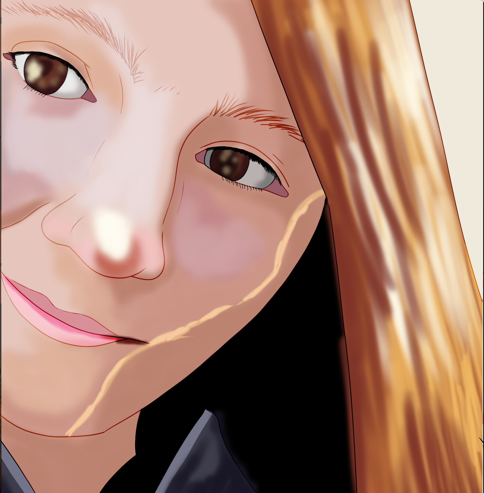

My name is Ashley Skyvington. I have been video editing as a hobby and for occasional class assignments for seventeen years. My interest in the cinematic arts dates back to my early childhood and I have followed that passion to this day. I have extensive experience across multiple software with Adobe Premiere Pro and After Effects being my go-to preference since I was introduced to them in 2017.
I have attended Durham College, studying in multiple programs including Animation and Graphic Design. In addition, I continued my animation studies at the Nova Scotia Community College. Throughout my education experience I have developed a strong understanding of design principles, cinematic composition, and timing which are all crucial to the craft of post-production.
I am now looking to build a professional career in post-production. I am confident that my versatility and adaptability will make my skills an asset to any project. Whatever it is your videos require, I will do my absolute best to obtain the results you seek.
If you are interested in recruiting my services, feel free to contact me via email at: ashley.skyvington@gmail.com
I adapt my editing to the requirements of the given project to ensure that it fits the style and aesthetic desired. My process always begins the same however with organizing and laying down the raw footage and audio roughly to build the foundation. I then polish the timings to match the emotion desired to be conveyed. Last comes the embellishment where I add effects, colour correction and typography as needed. I prioritize precision in my craft and I can ensure that clients will always receive a high-standard finished product.